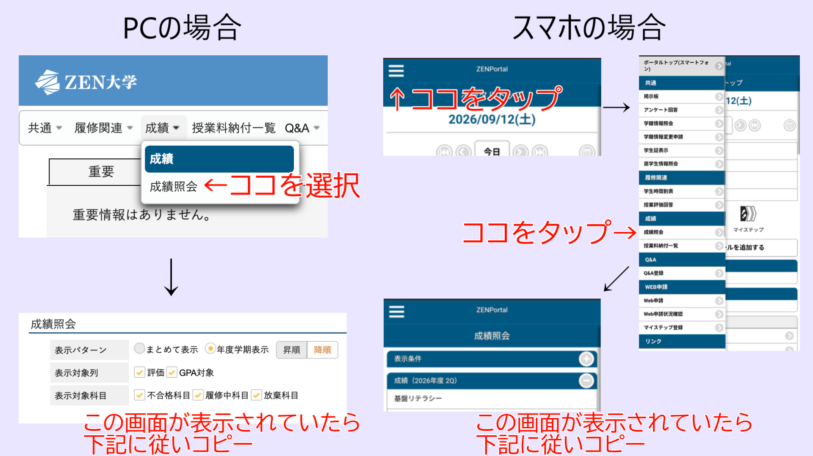

履修済み科目の登録

ZEN Portalから履修済み科目を取得する方法
ZEN Portalの 成績→成績照会 を開く
PCの場合: Ctrl (Macの方はcommand)+Aで全部選択し、Ctrl+Cでコピー
下記の入力欄に貼り付けをしてください。
スマホの場合: どこかしらの文字を長押し、項目の中からすべてを選択をタップ、その後コピーをタップ
下記の入力欄に貼り付けをしてください。
難しかった科目を選択してください
履修診断
診断結果
あなたにおすすめの科目は...